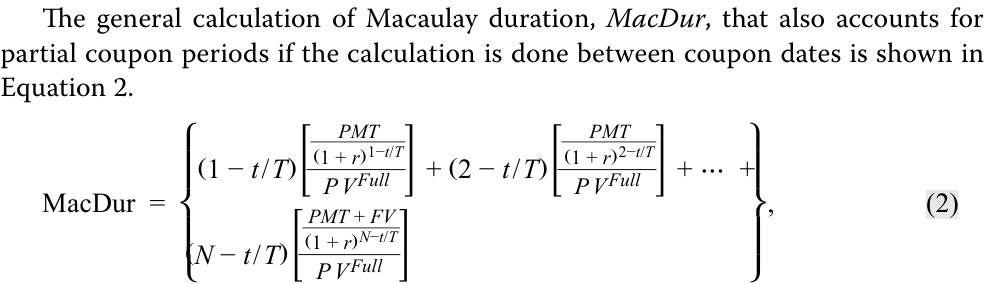
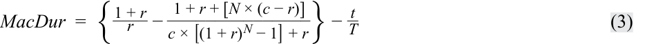
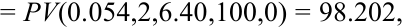
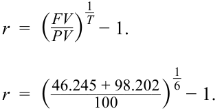

Learning Module 10 Interest Rate Risk and Return - Part 2: Macaulay Duration
Volume 6: Fixed Income
Learning Module 10 Interest Rate Risk and Return
Part 2/2: Macaulay Duration (PDF Pages 265–276)
Tập 6: Thu nhập Cố định (Fixed Income)
Học phần 10: Rủi ro Lãi suất và Tỷ suất Sinh lợi (Interest Rate Risk and Return)
Phần 2/2: Thời lượng Macaulay (Trang PDF 265–276)
C. Neither price nor reinvestment risk Solution:
- C. Không phải rủi ro giá cũng không phải rủi ro tái đầu tư
B is correct. A buy-and-hold investor is not exposed to price risk, because she does not intend to sell the bond prior to maturity. However, her rate of return is impacted by the rate at which she can reinvest coupons.
Lời giải:
B là đáp án đúng. Một nhà đầu tư mua và nắm giữ không chịu rủi ro giá, bởi vì cô ấy không có ý định bán trái phiếu trước khi đáo hạn. Tuy nhiên, tỷ suất sinh lợi của cô ấy chịu tác động bởi mức lãi suất mà tại đó cô ấy có thể tái đầu tư các khoản coupon.
Alternatively, the investor’s investment horizon is eight years, whereas the bond’s Macaulay duration is 6.841. When the investment horizon exceeds the Macaulay duration, reinvestment risk dominates.
Theo cách giải thích khác, thời hạn đầu tư của nhà đầu tư là 8 năm, trong khi thời lượng Macaulay của trái phiếu là 6,841. Khi thời hạn đầu tư vượt quá thời lượng Macaulay, rủi ro tái đầu tư sẽ chi phối.
MACAULAY DURATION
THỜI LƯỢNG MACAULAY (MACAULAY DURATION)
4
4
define, calculate, and interpret Macaulay duration.
định nghĩa, tính toán và diễn giải thời lượng Macaulay.
The prior lesson established Macaulay duration as a holding period for a bond that balances reinvestment and price risk. We now turn to its calculation.
Bài học trước đã xác lập thời lượng Macaulay là một thời kỳ nắm giữ đối với một trái phiếu giúp cân bằng giữa rủi ro tái đầu tư và rủi ro giá. Bây giờ chúng ta chuyển sang cách tính toán đại lượng này.
The most straightforward way to understand the Macaulay duration of a traditional fixed-rate bond is that it is the weighted average of the time to receipt of the bond’s cash flows, where the weights of each cash flow in the calculation are each cash flow’s share of the bond’s full price (i.e., present value). Before we introduce the general equation, let’s take a specific example to demonstrate the calculation of Macaulay duration: BRWA’s 10-year, 6.2% (annual) coupon eurobond used in the previous lessons.
Cách trực tiếp nhất để hiểu thời lượng Macaulay (Macaulay duration) của một trái phiếu lãi suất cố định truyền thống là nó là trung bình có trọng số của thời gian cho đến khi nhận được (time to receipt) các dòng tiền của trái phiếu, trong đó trọng số của mỗi dòng tiền trong phép tính là tỷ trọng của mỗi dòng tiền trong giá toàn phần (full price – tức là giá trị hiện tại) của trái phiếu. Trước khi chúng tôi giới thiệu phương trình tổng quát, hãy lấy một ví dụ cụ thể để minh họa phép tính thời lượng Macaulay: trái phiếu eurobond kỳ hạn 10 năm, trả coupon 6,2% (hàng năm) của BRWA được sử dụng trong các bài học trước.
Exhibit 4 illustrates the calculation of Macaulay duration at issuance, assuming the bond was issued at par, settled on 15 October 2025, and matures on 15 October 2035. Because this is a corporate bond, we assume a 30/360 day-count basis.
Bảng 4 minh họa phép tính thời lượng Macaulay tại thời điểm phát hành, giả sử trái phiếu được phát hành ngang mệnh giá, thanh toán vào ngày 15 tháng 10 năm 2025, và đáo hạn vào ngày 15 tháng 10 năm 2035. Bởi vì đây là một trái phiếu doanh nghiệp, chúng ta giả định cơ sở đếm ngày 30/360.
Exhibit 4: Macaulay Duration of BRWA Corp. 10-Year, 6.2% Annual Eurobond at Issuance
Bảng 4: Thời lượng Macaulay của Trái phiếu Eurobond Hàng năm 6,2%, Kỳ hạn 10 năm của BRWA Corp. tại Thời điểm Phát hành (Exhibit 4: Macaulay Duration of BRWA Corp. 10-Year, 6.2% Annual Eurobond at Issuance)
| Coupon | 6.20% |
|---|---|
| Coupon frequency per year | 1 |
| Price per 100 par value | 100 |
| Yield-to-maturity | 6.20% |
| Settlement date | 15 October 2025 |
| Maturity | 15 October 2035 |
| Years to maturity | 10 |
| Coupon | 6,20% |
|---|---|
| Tần suất trả coupon mỗi năm (Coupon frequency per year) | 1 |
| Giá trên mỗi 100 đơn vị mệnh giá (Price per 100 par value) | 100 |
| Lợi suất đáo hạn (Yield-to-maturity) | 6,20% |
| Ngày thanh toán (Settlement date) | 15 tháng 10 năm 2025 |
| Ngày đáo hạn (Maturity) | 15 tháng 10 năm 2035 |
| Số năm cho đến khi đáo hạn (Years to maturity) | 10 |
| (1) | (2) | (3) | (4) | (5) | (6) |
|---|---|---|---|---|---|
| (4) ÷ Sum | (1) × (5) | ||||
| of present | |||||
| values |
| (1) | (2) | (3) | (4) | (5) = (4) $\div$ Tổng giá trị hiện tại | (6) = (2) $\times$ (5) |
|---|---|---|---|---|---|
| Kỳ (Period) | Thời gian cho đến khi nhận (Time to receipt) | Dòng tiền (Cash flow) | Giá trị hiện tại (Present value) | Trọng số (Weight) | Thời gian nhận $\times$ trọng số (Time to receipt $\times$ weight) |
| 1 | 1 | 6,2 | 5,8380 | 0,0584 | 0,0584 |
| 2 | 2 | 6,2 | 5,4972 | 0,0550 | 0,1099 |
| 3 | 3 | 6,2 | 5,1763 | 0,0518 | 0,1553 |
| 4 | 4 | 6,2 | 4,8741 | 0,0487 | 0,1950 |
| 5 | 5 | 6,2 | 4,5895 | 0,0459 | 0,2295 |
| 6 | 6 | 6,2 | 4,3216 | 0,0432 | 0,2593 |
| 7 | 7 | 6,2 | 4,0693 | 0,0407 | 0,2849 |
| 8 | 8 | 6,2 | 3,8317 | 0,0383 | 0,3065 |
| 9 | 9 | 6,2 | 3,6080 | 0,0361 | 0,3247 |
| 10 | 10 | 106,2 | 58,1942 | 0,5819 | 5,8194 |
| 100,0000 | 1,0000 | 7,7429 |
| Period | Time to receipt | Cash flow |
Present value |
Weight | Time to receipt × weight |
|---|---|---|---|---|---|
| 1 | 1 | 6.2 | 5.8380 | 0.0584 | 0.0584 |
| 2 | 2 | 6.2 | 5.4972 | 0.0550 | 0.1099 |
| 3 | 3 | 6.2 | 5.1763 | 0.0518 | 0.1553 |
| 4 | 4 | 6.2 | 4.8741 | 0.0487 | 0.1950 |
| 5 | 5 | 6.2 | 4.5895 | 0.0459 | 0.2295 |
| 6 | 6 | 6.2 | 4.3216 | 0.0432 | 0.2593 |
| 7 | 7 | 6.2 | 4.0693 | 0.0407 | 0.2849 |
| 8 | 8 | 6.2 | 3.8317 | 0.0383 | 0.3065 |
| 9 | 9 | 6.2 | 3.6080 | 0.0361 | 0.3247 |
| 10 | 10 | 106.2 | 58.1942 | 0.5819 | 5.8194 |
| 100.0000 | 1.0000 | 7.7429 |
-
Cột 1 và Cột 2 hiển thị tương ứng số kỳ và thời gian cho đến khi nhận được dòng tiền. Nếu phép tính được thực hiện tại thời điểm phát hành hoặc vào một ngày trả coupon, chúng sẽ bằng nhau.
-
Cột 3 là dòng tiền trên mỗi 100 đơn vị mệnh giá, và Cột 4 là giá trị hiện tại của dòng tiền đó.
-
Cột thứ năm là trọng số, hay tỷ trọng của mỗi dòng tiền trong tổng $PV$. Hãy chú ý rằng khoản thanh toán cuối cùng, $PMT_N + FV_N$, ở mức 106,2 chiếm 58% $PV$ của trái phiếu.
-
Cột thứ sáu là thời gian cho đến khi nhận được dòng tiền (Cột 2) nhân với trọng số (Cột 5). Tổng của cột này chính là thời lượng Macaulay, 7,7429. Con số này gần với thời hạn đầu tư 8 năm của Hightest Capital từ bài học trước, điều đó có nghĩa là Hightest đã cân bằng được rủi ro tái đầu tư và rủi ro giá của mình.
-
Columns 1 and 2 show the number of periods and the time to receipt of the cash flow, respectively. If the calculation is done at issuance or on a coupon date, they are equal.
-
Column 3 is the cash flow per 100 of par value, and column 4 is the present value of that cash flow.
-
The fifth column is the weight, or each cash flow’s share of total PV . Notice that the final payment, PMTN + FVN , of 106.2 accounts for 58% of the bond’s PV.
-
The sixth column is the time to receipt of the cash flow (Column 2) multiplied by the weight (Column 5). The sum of this column is the Macaulay duration, 7.7429. This is close to Hightest Capital’s investment horizon of eight years from the prior lesson, which means that Hightest has balanced its reinvestment and price risk.
Macaulay duration is often quoted as an annualized statistic. Since this bond pays coupons annually, no adjustment is needed. If the bond were a semiannual coupon bond, we would divide the Macaulay duration by 2 (two semiannual periods per year) to obtain an annualized Macaulay duration. When quoted as an annualized statistic, the units for Macaulay duration is years.
Thời lượng Macaulay thường được yết dưới dạng một số liệu thống kê chuẩn hóa theo năm (annualized statistic). Vì trái phiếu này trả coupon hàng năm, nên không cần điều chỉnh gì thêm. Nếu trái phiếu là một trái phiếu trả coupon nửa năm một lần, chúng ta sẽ chia thời lượng Macaulay cho 2 (hai kỳ nửa năm trong mỗi năm) để thu được thời lượng Macaulay chuẩn hóa theo năm. Khi được yết dưới dạng một số liệu thống kê chuẩn hóa theo năm, đơn vị của thời lượng Macaulay là năm (years).
Notice how 7.7429 years is less than 10, the time-to-maturity of the bond. This is because Macaulay duration is a present value–weighted average of the time to receipt of the cash flows, while time-to-maturity is the time to receipt of the final cash flow.
Hãy chú ý cách con số 7,7429 năm nhỏ hơn 10, tức thời gian đáo hạn của trái phiếu. Điều này là do thời lượng Macaulay là trung bình có trọng số theo giá trị hiện tại của thời gian cho đến khi nhận được các dòng tiền, trong khi thời gian đáo hạn là thời gian cho đến khi nhận được dòng tiền cuối cùng.

Phép tính tổng quát của thời lượng Macaulay, $\text{MacDur}$, có tính đến cả các kỳ coupon lẻ nếu phép tính được thực hiện giữa các ngày trả coupon được hiển thị trong Phương trình 2:
where
t is the number of days from the last coupon payment to the settlement date;
trong đó:
T is the number of days in the coupon period;
- t / T is the fraction of the coupon period that has passed since the last payment;
-
$t$ là số ngày từ lần thanh toán coupon gần nhất cho đến ngày thanh toán giao dịch (settlement date);
-
$T$ là số ngày trong kỳ coupon;
-
$t/T$ là phân số của kỳ coupon đã trôi qua kể từ lần thanh toán gần nhất;
-
$PMT$ là khoản thanh toán coupon mỗi kỳ;
-
$FV$ là giá trị tương lai được trả khi đáo hạn, hay mệnh giá của trái phiếu;
-
$r$ là lợi suất đáo hạn mỗi kỳ; và
-
$N$ là số kỳ cách đều nhau cho đến khi đáo hạn tính tại thời điểm bắt đầu của kỳ hiện tại.
PMT is the coupon payment per period;
VÍ DỤ 5
-
FV is the future value paid at maturity, or the par value of the bond;
-
r is the yield-to-maturity per period; and
N is the number of evenly spaced periods to maturity as of the beginning of the current period.
Thời lượng Macaulay Giữa các Ngày trả Coupon (Macaulay Duration between Coupon Dates)
EXAMPLE 5
Macaulay Duration between Coupon Dates
Bây giờ hãy tính thời lượng Macaulay cho trái phiếu BRWA giữa các ngày trả coupon—cụ thể là vào ngày 11 tháng 12 năm 2025, tức 57 ngày sau khi phát hành. Điểm khác biệt duy nhất so với ví dụ trước là chúng ta đang ở thời điểm 57 ngày trong tương lai, vì vậy thay vì $t/T = 0$ như tại thời điểm phát hành, $t/T = 57/360$, và thời gian cho đến khi nhận được mỗi dòng tiền sớm hơn 57 ngày.
Now let’s compute the Macaulay duration for the BRWA bond between coupon dates—specifically, on 11 December 2025, 57 days after issuance. The only difference from the prior example is that we are 57 days in the future, so rather than t / T = 0 like at issuance, t / T = 57/360, and each cash flow’s time to receipt is 57 days earlier.
Thời lượng Macaulay của Trái phiếu Eurobond Hàng năm 6,2%, Kỳ hạn 10 năm của BRWA Corp. Thanh toán 57 Ngày sau khi Phát hành (Macaulay Duration of BRWA Corp. 10-Year, 6.2% Annual Eurobond Settling 57 Days after Issuance)
Macaulay Duration of BRWA Corp. 10-Year, 6.2% Annual Eurobond Settling 57 Days after Issuance
| Coupon | 6.20% |
|---|---|
| Coupon frequency per year | 1 |
| Price per 100 par value | 100 |
| Yield-to-maturity | 6.20% |
| Settlement date | 11 December 2025 |
| Maturity | 15 October 2035 |
| Years to maturity | 10 |
| Coupon | 6,20% |
|---|---|
| Tần suất trả coupon mỗi năm (Coupon frequency per year) | 1 |
| Giá trên mỗi 100 đơn vị mệnh giá (Price per 100 par value) | 100 |
| Lợi suất đáo hạn (Yield-to-maturity) | 6,20% |
| Ngày thanh toán (Settlement date) | 11 tháng 12 năm 2025 |
| Ngày đáo hạn (Maturity) | 15 tháng 10 năm 2035 |
| Số năm cho đến khi đáo hạn (Years to maturity) | 10 |
| (1) | (2) | (3) | (4) | (5) | (6) |
|---|---|---|---|---|---|
| (4) ÷ Sum of | (1) × (5) | ||||
| present values |
| Period | Time to receipt |
Cash flow |
Present value |
Weight | Time to receipt × weight |
|---|---|---|---|---|---|
| 1 | 0.8417 | 6.2 | 5.8939 | 0.0584 | 0.0491 |
| 2 | 1.8417 | 6.2 | 5.5498 | 0.0550 | 0.1012 |
| 3 | 2.8417 | 6.2 | 5.2258 | 0.0518 | 0.1471 |
| 4 | 3.8417 | 6.2 | 4.9207 | 0.0487 | 0.1872 |
| 5 | 4.8417 | 6.2 | 4.6335 | 0.0459 | 0.2222 |
| 6 | 5.8417 | 6.2 | 4.3630 | 0.0432 | 0.2525 |
| 7 | 6.8417 | 6.2 | 4.1082 | 0.0407 | 0.2784 |
| 8 | 7.8417 | 6.2 | 3.8684 | 0.0383 | 0.3005 |
| (1) | (2) | (3) | (4) | (5) = (4) $\div$ Tổng giá trị hiện tại | (6) = (2) $\times$ (5) |
|---|---|---|---|---|---|
| Kỳ (Period) | Thời gian cho đến khi nhận (Time to receipt) | Dòng tiền (Cash flow) | Giá trị hiện tại (Present value) | Trọng số (Weight) | Thời gian nhận $\times$ trọng số (Time to receipt $\times$ weight) |
| 1 | 0,8417 | 6,2 | 5,8939 | 0,0584 | 0,0491 |
| 2 | 1,8417 | 6,2 | 5,5498 | 0,0550 | 0,1012 |
| 3 | 2,8417 | 6,2 | 5,2258 | 0,0518 | 0,1471 |
| 4 | 3,8417 | 6,2 | 4,9207 | 0,0487 | 0,1872 |
| 5 | 4,8417 | 6,2 | 4,6335 | 0,0459 | 0,2222 |
| 6 | 5,8417 | 6,2 | 4,3630 | 0,0432 | 0,2525 |
| 7 | 6,8417 | 6,2 | 4,1082 | 0,0407 | 0,2784 |
| 8 | 7,8417 | 6,2 | 3,8684 | 0,0383 | 0,3005 |
| Period | Time to receipt |
Cash flow |
Present value |
Weight | Time to receipt × weight |
|---|---|---|---|---|---|
| 9 | 8.8417 | 6.2 | 3.6426 | 0.0361 | 0.3190 |
| 10 | 9.8417 | 106.2 | 58.7511 | 0.5819 | 5.7273 |
| 100.9570 | 1.0000 | 7.5845 |
| Kỳ (Period) | Thời gian cho đến khi nhận (Time to receipt) | Dòng tiền (Cash flow) | Giá trị hiện tại (Present value) | Trọng số (Weight) | Thời gian nhận $\times$ trọng số (Time to receipt $\times$ weight) |
|---|---|---|---|---|---|
| 9 | 8,8417 | 6,2 | 3,6426 | 0,0361 | 0,3190 |
| 10 | 9,8417 | 106,2 | 58,7511 | 0,5819 | 5,7273 |
| 100,9570 | 1,0000 | 7,5845 |
Comparing this example to the prior example, we see that the time to receipt of each flow is lower, reflecting the fact that we are 57 days later, which increases the present value of each cash flow. However, the present value weight of each cash flow remains the same. The Macaulay duration (7.5845) is lower than in the prior example (7.7429), reflecting the lower times to receipt.
This example demonstrates an important property of Macaulay duration: it is not static; it falls as time elapses and the time to receipt of each cash flow falls.
So sánh ví dụ này với ví dụ trước, chúng ta thấy rằng thời gian cho đến khi nhận được mỗi dòng tiền đều thấp hơn, phản ánh thực tế là chúng ta đang ở thời điểm muộn hơn 57 ngày, điều này làm tăng giá trị hiện tại của mỗi dòng tiền. Tuy nhiên, trọng số giá trị hiện tại của mỗi dòng tiền vẫn giữ nguyên như cũ. Thời lượng Macaulay (7,5845) thấp hơn so với trong ví dụ trước (7,7429), phản ánh thời gian cho đến khi nhận được dòng tiền thấp hơn.
Besides a spreadsheet, Macaulay duration also can be calculated using the DURATION function in Microsoft Excel or Google Sheets:
Ví dụ này chứng minh một tính chất quan trọng của thời lượng Macaulay: nó không tĩnh (not static); nó giảm xuống khi thời gian trôi qua và thời gian cho đến khi nhận được mỗi dòng tiền giảm xuống.
=DURATION( Settlement , Maturity , Coupon , Yld , Frequency , [ Basis ])
where
Bên cạnh bảng tính, thời lượng Macaulay cũng có thể được tính bằng cách sử dụng hàm DURATION trong Microsoft Excel hoặc Google Sheets:
Settlement is the date of settlement, in DATE form
Maturity is the maturity date, in DATE form
=DURATION(Settlement, Maturity, Coupon, Yld, Frequency, [Basis])
Coupon is the annual coupon rate
Yld is the annualized yield-to-maturity
trong đó:
Frequency is the periodicity, typically the number of coupon payments per year; it is 1 for annual, 2 for semiannual, 4 for quarterly
-
Settlement là ngày thanh toán giao dịch, ở định dạng DATE
-
Maturity là ngày đáo hạn, ở định dạng DATE
-
Coupon là lãi suất coupon hàng năm
-
Yld là lợi suất đáo hạn chuẩn hóa theo năm
-
Frequency là định kỳ (periodicity), thường là số lần thanh toán coupon mỗi năm; bằng 1 đối với hàng năm, 2 đối với nửa năm một lần, 4 đối với hàng quý
-
[Basis] là quy ước đếm ngày; 0 hoặc bỏ trống là 30/360, 1 là thực tế/thực tế (act/act), 2 là thực tế/360 (act/360), 3 là thực tế/365 (act/365)
[ Basis ] is the day-count convention; 0 or omitted is 30/360, 1 is act/act, 2 is act/360, 3 is act/365
Finally, another approach to calculating Macaulay duration is to use a closed-form equation derived using calculus and algebra, shown as Equation 3:
Cuối cùng, một phương pháp khác để tính thời lượng Macaulay là sử dụng một phương trình dạng đóng (closed-form equation) được suy ra bằng giải tích và đại số, được hiển thị dưới dạng Phương trình 3:

where
r is the yield-to-maturity per period;
trong đó:
N is the number of evenly spaced periods to maturity as of the beginning of the current period;
c is the coupon rate per period;
-
$r$ là lợi suất đáo hạn mỗi kỳ;
-
$N$ là số kỳ cách đều nhau cho đến khi đáo hạn tính tại thời điểm bắt đầu của kỳ hiện tại;
-
$c$ là lãi suất coupon mỗi kỳ;
-
$t$ là số ngày từ lần thanh toán coupon gần nhất cho đến ngày thanh toán giao dịch;
t is the number of days from the last coupon payment to the settlement date;
và
and
T is the number of days in the coupon period.
- $T$ là số ngày trong kỳ coupon.
QUESTION SET
BỘ CÂU HỎI (QUESTION SET)
- Consider a bond that has three years remaining to maturity and a coupon of 4% paid semiannually and is priced at 100. The bond’s annualized Macaulay duration is closest to:
A. 2.801 years.
- Xét một trái phiếu còn 3 năm nữa là đáo hạn và có lãi suất coupon 4% trả nửa năm một lần và được định giá ở mức 100. Thời lượng Macaulay chuẩn hóa theo năm của trái phiếu gần nhất với mức:
-
A. 2,801 năm.
-
B. 2,857 năm.
-
C. 3,000 năm.
B. 2.857 years.
C. 3.000 years.
Lời giải:
Solution:
B is correct.
B là đáp án đúng.
| Period | Time to receipt |
Cash flow |
Present value | Weight | Time to receipt × weight |
|---|---|---|---|---|---|
| 1 | 1 | 2 | 1.961 | 0.0196 | 0.01961 |
| 2 | 2 | 2 | 1.922 | 0.0192 | 0.03845 |
| 3 | 3 | 2 | 1.885 | 0.0189 | 0.05654 |
| 4 | 4 | 2 | 1.848 | 0.0185 | 0.07391 |
| 5 | 5 | 2 | 1.811 | 0.0181 | 0.09057 |
| 6 | 6 | 102 | 90.573 | 0.9057 | 5.43438 |
| 100.00000 | 1.00000 | 5.71346 | |||
| Annualize | d Macaulay | duration | (years) | 2.857 |
| Kỳ (Period) | Thời gian cho đến khi nhận (Time to receipt) | Dòng tiền (Cash flow) | Giá trị hiện tại (Present value) | Trọng số (Weight) | Thời gian nhận $\times$ trọng số (Time to receipt $\times$ weight) |
|---|---|---|---|---|---|
| 1 | 1 | 2 | 1,961 | 0,0196 | 0,01961 |
| 2 | 2 | 2 | 1,922 | 0,0192 | 0,03845 |
| 3 | 3 | 2 | 1,885 | 0,0189 | 0,05654 |
| 4 | 4 | 2 | 1,848 | 0,0185 | 0,07391 |
| 5 | 5 | 2 | 1,811 | 0,0181 | 0,09057 |
| 6 | 6 | 102 | 90,573 | 0,9057 | 5,43438 |
| 100,00000 | 1,00000 | 5,71346 | |||
| Thời lượng Macaulay chuẩn hóa theo năm (năm) (Annualized Macaulay duration (years)) | 2,857 |
Annualized Macaulay duration (years)
- An investor with a three-year investment horizon purchases a bond with four years remaining to maturity, a coupon of 1% paid semiannually, and a yield-to-maturity of 0.90%. With respect to interest rate risk, the investor is primarily concerned about:
-
A. rising interest rates.
-
B. falling interest rates.
-
C. neither rising nor falling interest rates.
-
Solution:
- Một nhà đầu tư có thời hạn đầu tư 3 năm mua một trái phiếu còn 4 năm nữa là đáo hạn, lãi suất coupon 1% trả nửa năm một lần, và lợi suất đáo hạn là 0,90%. Xét về rủi ro lãi suất, nhà đầu tư này chủ yếu lo ngại về:
-
A. lãi suất tăng (rising interest rates).
-
B. lãi suất giảm (falling interest rates).
-
C. không lo ngại về lãi suất tăng cũng không lo ngại về lãi suất giảm.
-
Lời giải:
A is correct. The Macaulay duration of the bond is 3.9312 years.
A là đáp án đúng. Thời lượng Macaulay của trái phiếu là 3,9312 năm.
| Period | Time to Receipt |
Cash Flow | PV | Weight | Time to Receipt × Weight |
|---|---|---|---|---|---|
| 1.0000 | 1.0000 | 0.5000 | 0.4978 | 0.0050 | 0.0050 |
| 2.0000 | 2.0000 | 0.5000 | 0.4955 | 0.0049 | 0.0099 |
| 3.0000 | 3.0000 | 0.5000 | 0.4933 | 0.0049 | 0.0147 |
| 4.0000 | 4.0000 | 0.5000 | 0.4911 | 0.0049 | 0.0196 |
| 5.0000 | 5.0000 | 0.5000 | 0.4889 | 0.0049 | 0.0243 |
| 6.0000 | 6.0000 | 0.5000 | 0.4867 | 0.0048 | 0.0291 |
| 7.0000 | 7.0000 | 0.5000 | 0.4845 | 0.0048 | 0.0338 |
| 8.0000 | 8.0000 | 100.5000 | 96.9542 | 0.9658 | 7.7260 |
| Kỳ (Period) | Thời gian cho đến khi nhận (Time to Receipt) | Dòng tiền (Cash Flow) | PV | Trọng số (Weight) | Thời gian nhận $\times$ Trọng số (Time to Receipt $\times$ Weight) |
|---|---|---|---|---|---|
| 1,0000 | 1,0000 | 0,5000 | 0,4978 | 0,0050 | 0,0050 |
| 2,0000 | 2,0000 | 0,5000 | 0,4955 | 0,0049 | 0,0099 |
| 3,0000 | 3,0000 | 0,5000 | 0,4933 | 0,0049 | 0,0147 |
| 4,0000 | 4,0000 | 0,5000 | 0,4911 | 0,0049 | 0,0196 |
| 5,0000 | 5,0000 | 0,5000 | 0,4889 | 0,0049 | 0,0243 |
| 6,0000 | 6,0000 | 0,5000 | 0,4867 | 0,0048 | 0,0291 |
| 7,0000 | 7,0000 | 0,5000 | 0,4845 | 0,0048 | 0,0338 |
| 8,0000 | 8,0000 | 100,5000 | 96,9542 | 0,9658 | 7,7260 |
| Period | Time to Receipt |
Cash Flow | PV | Weight | Time to Receipt × Weight |
|---|---|---|---|---|---|
| 100.3920 | 1.0000 | 7.8624 | |||
| Annualized | MacDur (years) | 3.9312 |
| Kỳ (Period) | Thời gian cho đến khi nhận (Time to Receipt) | Dòng tiền (Cash Flow) | PV | Trọng số (Weight) | Thời gian nhận $\times$ Trọng số (Time to Receipt $\times$ Weight) |
|---|---|---|---|---|---|
| 100,3920 | 1,0000 | 7,8624 | |||
| MacDur chuẩn hóa theo năm (năm) (Annualized MacDur (years)) | 3,9312 |
When the Macaulay duration of a bond is longer than the investor’s investment horizon (three years), price risk dominates and the investor’s primary downside concern is rising interest rates.
- Consider a bond that has five years remaining to maturity, a coupon of 0.5% paid annually, and a yield-to-maturity of –0.20%. The bond’s annualized Macaulay duration is closest to:
Khi thời lượng Macaulay của một trái phiếu dài hơn thời hạn đầu tư của nhà đầu tư (3 năm), rủi ro giá sẽ chi phối và mối lo ngại rủi ro giảm giá (downside concern) chính của nhà đầu tư là lãi suất tăng.
A. 2.4758.
- B. 4.9515.
- Xét một trái phiếu còn 5 năm nữa là đáo hạn, lãi suất coupon 0,5% trả hàng năm, và lợi suất đáo hạn là –0,20%. Thời lượng Macaulay chuẩn hóa theo năm của trái phiếu gần nhất với mức:
-
A. 2,4758.
-
B. 4,9515.
-
C. 5,3130.
C. 5.3130.
Lời giải:
Solution:
B is correct.
B là đáp án đúng.
| Period | Time to Receipt |
CF | PV | Weight | Time to Receipt × Weight |
|---|---|---|---|---|---|
| 1.0000 | 1.0000 | 0.5000 | 0.5010 | 0.0048 | 0.0048 |
| 2.0000 | 2.0000 | 0.5000 | 0.5020 | 0.0048 | 0.0097 |
| 3.0000 | 3.0000 | 0.5000 | 0.5030 | 0.0049 | 0.0146 |
| 4.0000 | 4.0000 | 0.5000 | 0.5040 | 0.0049 | 0.0195 |
| 5.0000 | 5.0000 | 100.5000 | 101.5111 | 0.9806 | 4.9029 |
| 103.5211 | 1.0000 | 4.9515 |
| Kỳ (Period) | Thời gian cho đến khi nhận (Time to Receipt) | CF | PV | Trọng số (Weight) | Thời gian nhận $\times$ Trọng số (Time to Receipt $\times$ Weight) |
|---|---|---|---|---|---|
| 1,0000 | 1,0000 | 0,5000 | 0,5010 | 0,0048 | 0,0048 |
| 2,0000 | 2,0000 | 0,5000 | 0,5020 | 0,0048 | 0,0097 |
| 3,0000 | 3,0000 | 0,5000 | 0,5030 | 0,0049 | 0,0146 |
| 4,0000 | 4,0000 | 0,5000 | 0,5040 | 0,0049 | 0,0195 |
| 5,0000 | 5,0000 | 100,5000 | 101,5111 | 0,9806 | 4,9029 |
| 103,5211 | 1,0000 | 4,9515 |
- Consider a bond that has five years remaining to maturity, a coupon of 0.5% paid annually, and a yield-to-maturity of –0.20%. Assume it is 91 days into the first coupon period and a 30/360 basis. The bond’s annualized Macaulay duration is closest to:
-
A. 4.2371.
-
B. 4.5054.
- Xét một trái phiếu còn 5 năm nữa là đáo hạn, lãi suất coupon 0,5% trả hàng năm, và lợi suất đáo hạn là –0,20%. Giả sử đã qua 91 ngày trong kỳ coupon đầu tiên và tính theo cơ sở 30/360. Thời lượng Macaulay chuẩn hóa theo năm của trái phiếu gần nhất với mức:
-
A. 4,2371.
-
B. 4,5054.
-
C. 4,6987.
C. 4.6987.
Solution:
Lời giải:
C is correct.
C là đáp án đúng.
| Period | Time to Receipt |
Cash Flow | PV | Weight | Time to Receipt × Weight |
|---|---|---|---|---|---|
| 1.0000 | 0.7472 | 0.5000 | 0.5007 | 0.0048 | 0.0036 |
| 2.0000 | 1.7472 | 0.5000 | 0.5018 | 0.0048 | 0.0085 |
| 3.0000 | 2.7472 | 0.5000 | 0.5028 | 0.0049 | 0.0133 |
| 4.0000 | 3.7472 | 0.5000 | 0.5038 | 0.0049 | 0.0182 |
| Kỳ (Period) | Thời gian cho đến khi nhận (Time to Receipt) | Dòng tiền (Cash Flow) | PV | Trọng số (Weight) | Thời gian nhận $\times$ Trọng số (Time to Receipt $\times$ Weight) |
|---|---|---|---|---|---|
| 1,0000 | 0,7472 | 0,5000 | 0,5007 | 0,0048 | 0,0036 |
| 2,0000 | 1,7472 | 0,5000 | 0,5018 | 0,0048 | 0,0085 |
| 3,0000 | 2,7472 | 0,5000 | 0,5028 | 0,0049 | 0,0133 |
| 4,0000 | 3,7472 | 0,5000 | 0,5038 | 0,0049 | 0,0182 |
| Period | Time to Receipt |
Cash Flow | PV | Weight | Time to Receipt × Weight |
|---|---|---|---|---|---|
| 5.0000 | 4.7472 | 100.5000 | 101.4597 | 0.9806 | 4.6550 |
| 103.4687 | 1.0000 | 4.6987 |
| Kỳ (Period) | Thời gian cho đến khi nhận (Time to Receipt) | Dòng tiền (Cash Flow) | PV | Trọng số (Weight) | Thời gian nhận $\times$ Trọng số (Time to Receipt $\times$ Weight) |
|---|---|---|---|---|---|
| 5,0000 | 4,7472 | 100,5000 | 101,4597 | 0,9806 | 4,6550 |
| 103,4687 | 1,0000 | 4,6987 |
Note that a straightforward way to calculate Macaulay duration using a spreadsheet between coupon periods is to set the first cash flow’s time to receipt as 1 – t / T (here = 1 – 91/360) and subsequent times to receipt as the prior plus 1.
Lưu ý rằng một cách trực tiếp để tính thời lượng Macaulay bằng bảng tính giữa các kỳ coupon là đặt thời gian cho đến khi nhận được dòng tiền đầu tiên bằng $1 - t/T$ (ở đây $= 1 - 91/360$) và thời gian cho đến khi nhận được các dòng tiền tiếp theo bằng thời gian của kỳ trước đó cộng thêm 1.
~~PRACTICE PROBLEMS~~
BÀI TẬP THỰC HÀNH (PRACTICE PROBLEMS)
1. Assuming no capital gain or loss when the bond is sold, an investor’s horizon yield is equal to a bond’s yield-to-maturity at the time of investment if coupons are reinvested at a rate:
1. Giả sử không có lãi hoặc lỗ vốn khi trái phiếu được bán, lợi suất theo thời hạn đầu tư (horizon yield) của một nhà đầu tư bằng với lợi suất đáo hạn của trái phiếu tại thời điểm đầu tư nếu các khoản coupon được tái đầu tư ở mức lãi suất:
-
A. lower than the bond’s yield-to-maturity at investment.
-
B. equal to the bond’s yield-to-maturity at investment.
-
C. higher than the bond’s yield-to-maturity at investment.
-
A. thấp hơn lợi suất đáo hạn của trái phiếu tại thời điểm đầu tư.
-
B. bằng với lợi suất đáo hạn của trái phiếu tại thời điểm đầu tư.
-
C. cao hơn lợi suất đáo hạn của trái phiếu tại thời điểm đầu tư.
2. An investor purchases an eight-year, 6.4% annual coupon eurobond priced at par (settlement: 15 June 2031; maturity: 15 December 2039) and sells it after six years. Assuming interest rates rise by 100 bps immediately after purchase, the investor’s rate of return at the end of six years is:
2. Một nhà đầu tư mua một trái phiếu eurobond kỳ hạn 8 năm, trả coupon hàng năm 6,4% được định giá ngang mệnh giá (ngày thanh toán: 15 tháng 6 năm 2031; ngày đáo hạn: 15 tháng 12 năm 2039) và bán nó sau 6 năm. Giả sử lãi suất tăng 100 bps ngay sau khi mua, tỷ suất sinh lợi của nhà đầu tư vào cuối năm thứ sáu sẽ:
-
A. lower than 6.4%.
-
B. equal to 6.4%.
-
C. higher than 6.4%.
-
A. thấp hơn 6,4%.
-
B. bằng 6,4%.
-
C. cao hơn 6,4%.
3. The carrying value of a bond purchased at a price below par is equal to the original purchase price:
3. Giá trị ghi sổ (carrying value) của một trái phiếu được mua ở mức giá dưới mệnh giá bằng với giá mua ban đầu:
-
A. minus the accumulated premium amortization.
-
B. minus the accumulated discount amortization.
-
C. plus the accumulated discount amortization.
-
A. trừ đi khoản phân bổ phần trội tích lũy (accumulated premium amortization).
-
B. trừ đi khoản phân bổ chiết khấu tích lũy (accumulated discount amortization).
-
C. cộng với khoản phân bổ chiết khấu tích lũy (accumulated discount amortization).
4. The duration gap at which reinvestment risk and price risk are equal is:
4. Chênh lệch thời lượng (duration gap) mà tại đó rủi ro tái đầu tư và rủi ro giá bằng nhau là:
-
A. less than zero.
-
B. equal to zero.
-
C. greater than zero.
-
A. nhỏ hơn không.
-
B. bằng không.
-
C. lớn hơn không.
5. When an investor’s investment horizon is less than a bond’s Macaulay duration, the investor faces downside risk if, after the purchase of the bond, interest rates:
5. Khi thời hạn đầu tư của một nhà đầu tư nhỏ hơn thời lượng Macaulay của trái phiếu, nhà đầu tư phải đối mặt với rủi ro giảm giá trị (downside risk) nếu, sau khi mua trái phiếu, lãi suất:
-
A. decrease.
-
B. increase.
-
C. either decrease or increase.
-
A. giảm.
-
B. tăng.
-
C. giảm hoặc tăng.
6. An investor purchases a 12-year, 5.8% annual bond and intends to sell it after 10 years. The Macaulay duration of the bond is 8.97 years. If interest rates fall by 75 bps immediately after the purchase of the bond, the investor faces:
6. Một nhà đầu tư mua một trái phiếu trả lãi hàng năm 5,8%, kỳ hạn 12 năm và dự định bán nó sau 10 năm. Thời lượng Macaulay của trái phiếu là 8,97 năm. Nếu lãi suất giảm 75 bps ngay sau khi mua trái phiếu, nhà đầu tư phải đối mặt với:
-
A. negative reinvestment risk.
-
B. no reinvestment risk.
-
C. positive reinvestment risk.
-
A. rủi ro tái đầu tư âm (negative reinvestment risk).
-
B. không có rủi ro tái đầu tư.
-
C. rủi ro tái đầu tư dương (positive reinvestment risk).
7. Consider a bond that has three years remaining to maturity, a coupon of 4% paid semiannually, and a yield-to-maturity of 4.60%. Assuming it is 12 days into the first coupon period and a 30/360 basis, the bond’s annualized Macaulay duration is closest to:
7. Xét một trái phiếu còn 3 năm nữa là đáo hạn, lãi suất coupon 4% trả nửa năm một lần, và lợi suất đáo hạn là 4,60%. Giả sử đã qua 12 ngày trong kỳ coupon đầu tiên và tính theo cơ sở 30/360, thời lượng Macaulay chuẩn hóa theo năm của trái phiếu gần nhất với mức:
-
A. 1.8764 years.
-
B. 2.8386 years.
-
C. 2.8553 years.
-
A. 1,8764 năm.
-
B. 2,8386 năm.
-
C. 2,8553 năm.
8. Hightest Capital purchases a seven-year, 6.4% coupon bond and has an intended investment horizon of four years. The Macaulay duration of the bond is 5.86 years. If interest rates increase by 50 bps immediately after buying the bond, Hightest Capital faces:
8. Hightest Capital mua một trái phiếu kỳ hạn 7 năm, lãi suất coupon 6,4% và có thời hạn đầu tư dự kiến là 4 năm. Thời lượng Macaulay của trái phiếu là 5,86 năm. Nếu lãi suất tăng 50 bps ngay sau khi mua trái phiếu, Hightest Capital phải đối mặt với:
-
A. negative price risk.
-
B. negative reinvestment risk.
-
C. positive price risk.
-
A. rủi ro giá âm (negative price risk).
-
B. rủi ro tái đầu tư âm (negative reinvestment risk).
-
C. rủi ro giá dương (positive price risk).
~~SOLUTIONS~~
LỜI GIẢI (SOLUTIONS)
- B is correct. For the horizon yield to match the original yield-to-maturity of the bond, two conditions must be met:
-
(1) The coupon payments are reinvested at the original yield-to-maturity.
-
(2) The bond is sold at the constant-yield price trajectory, implying no capital gain or loss when the bond is sold.
- B là đáp án đúng. Để lợi suất theo thời hạn đầu tư khớp với lợi suất đáo hạn ban đầu của trái phiếu, hai điều kiện phải được đáp ứng:
-
(1) Các khoản thanh toán coupon được tái đầu tư ở mức lợi suất đáo hạn ban đầu.
-
(2) Trái phiếu được bán tại quỹ đạo giá lợi suất không đổi (constant-yield price trajectory), ngụ ý không có lãi hoặc lỗ vốn khi trái phiếu được bán.
Since there is no gain or loss when the bond is sold, the horizon yield will be equal to the yield-to-maturity if the first condition is met (i.e., the coupons are reinvested at the original yield-to-maturity).
Vì không có lãi hoặc lỗ khi trái phiếu được bán, lợi suất theo thời hạn đầu tư sẽ bằng với lợi suất đáo hạn nếu điều kiện thứ nhất được đáp ứng (tức là các khoản coupon được tái đầu tư ở mức lợi suất đáo hạn ban đầu).
A is incorrect because the horizon yield will be lower than the yield-to-maturity if the coupons are reinvested at a lower rate than the original yield-to-maturity, assuming no capital gain or loss on sale of the bond.
A không đúng bởi vì lợi suất theo thời hạn đầu tư sẽ thấp hơn lợi suất đáo hạn nếu các khoản coupon được tái đầu tư ở mức lãi suất thấp hơn lợi suất đáo hạn ban đầu, giả sử không có lãi hoặc lỗ vốn khi bán trái phiếu.
C is incorrect because the horizon yield will be higher than the yield-to-maturity if the coupons are reinvested at a higher rate than the original yield-to-maturity, assuming no capital gain or loss on sale of the bond.
C không đúng bởi vì lợi suất theo thời hạn đầu tư sẽ cao hơn lợi suất đáo hạn nếu các khoản coupon được tái đầu tư ở mức lãi suất cao hơn lợi suất đáo hạn ban đầu, giả sử không có lãi hoặc lỗ vốn khi bán trái phiếu.
- A is correct. The future value of reinvested coupon interest is
- = FV (0.074,6,6.4,0,0) = 46.245.
- A là đáp án đúng. Giá trị tương lai của tiền lãi coupon được tái đầu tư là:
= -FV(0.074, 6, 6.4, 0, 0) = 46.245.
The sale price of the bond at the end of six years is
Giá bán của trái phiếu vào cuối năm thứ sáu là:

which results in a six-year horizon yield of 6.32%, which is lower than 6.40%:
dẫn đến lợi suất theo thời hạn đầu tư 6 năm là 6,32%, thấp hơn mức 6,40%:

r = 0.0632 = 6.32%.
$r = 0.0632 = 6.32\%$.
B and C are incorrect, because interest rates have risen and the investor’s investment horizon is not long enough to offset the price decline with additional reinvestment return.
B và C không đúng, bởi vì lãi suất đã tăng lên và thời hạn đầu tư của nhà đầu tư không đủ dài để bù đắp cho sự sụt giảm giá bằng tỷ suất sinh lợi tái đầu tư bổ sung.
- C is correct. A bond purchased at a discount will have its price “pulled to par” as it approaches maturity. Its carrying value at time t is equal to its purchase price plus the accumulated discount amortization.
A is incorrect because a bond purchased below par is purchased at a discount, not a premium.
- C là đáp án đúng. Một trái phiếu được mua ở mức chiết khấu sẽ có mức giá được “kéo về mệnh giá” khi tiến gần đến ngày đáo hạn. Giá trị ghi sổ (carrying value) của nó tại thời điểm $t$ bằng với giá mua của nó cộng với khoản phân bổ chiết khấu tích lũy.
B is incorrect because the accumulated discount amortization is added, not subtracted, from the purchase price to calculate carrying value.
A không đúng bởi vì một trái phiếu được mua dưới mệnh giá là được mua ở mức chiết khấu, chứ không phải phần trội.
- B is correct. Reinvestment risk and price risk equally offset each other when an investor’s investment horizon equals a bond’s Macaulay duration. This is when the duration gap is zero.
- A is incorrect because a duration gap of less than zero means that Macaulay duration is less than the investor’s investment horizon and that reinvestment risk is higher than price risk.
B không đúng bởi vì khoản phân bổ chiết khấu tích lũy được cộng vào, chứ không phải trừ đi khỏi giá mua để tính giá trị ghi sổ.
C is incorrect because when the duration gap is greater than zero, the Macaulay duration is greater than the investor’s investment horizon, so price risk is higher than reinvestment risk.
- B là đáp án đúng. Rủi ro tái đầu tư và rủi ro giá bù trừ tương đương cho nhau khi thời hạn đầu tư của nhà đầu tư bằng với thời lượng Macaulay của trái phiếu. Đây là khi chênh lệch thời lượng (duration gap) bằng không.
-
A không đúng bởi vì chênh lệch thời lượng nhỏ hơn không có nghĩa là thời lượng Macaulay nhỏ hơn thời hạn đầu tư của nhà đầu tư và rủi ro tái đầu tư cao hơn rủi ro giá.
-
C không đúng bởi vì khi chênh lệch thời lượng lớn hơn không, thời lượng Macaulay lớn hơn thời hạn đầu tư của nhà đầu tư, vì vậy rủi ro giá cao hơn rủi ro tái đầu tư.
- B is correct. If the investment horizon is less than the bond’s Macaulay duration, then the investor’s risk is higher interest rates. For such an investor, the market price risk dominates the coupon reinvestment risk.
-
A is incorrect because an investor faces risk due to a lower interest rate when the investment horizon is greater than the bond’s Macaulay duration.
-
C is incorrect because when the investment horizon is less than the Macaulay duration, the investor faces risk due to higher interest rates, not lower interest rates.
- A is correct. The investor has an investment horizon of 10 years, which is greater than the Macaulay duration of 8.97 years. Therefore, reinvestment risk dominates price risk.
- B is incorrect because the investor faces reinvestment risk because the investment horizon is higher than the Macaulay duration.
C is incorrect because the investor faces negative coupon reinvestment risk, not positive coupon reinvestment risk, since the coupons will be reinvested at a lower interest rate.
- B is correct.
- B là đáp án đúng. Nếu thời hạn đầu tư nhỏ hơn thời lượng Macaulay của trái phiếu, thì rủi ro của nhà đầu tư là lãi suất cao hơn. Đối với một nhà đầu tư như vậy, rủi ro giá thị trường sẽ chi phối rủi ro tái đầu tư coupon.
-
A không đúng bởi vì một nhà đầu tư phải đối mặt với rủi ro do lãi suất thấp hơn khi thời hạn đầu tư lớn hơn thời lượng Macaulay của trái phiếu.
-
C không đúng bởi vì khi thời hạn đầu tư nhỏ hơn thời lượng Macaulay, nhà đầu tư phải đối mặt với rủi ro do lãi suất cao hơn, chứ không phải lãi suất thấp hơn.
- A là đáp án đúng. Nhà đầu tư có thời hạn đầu tư là 10 năm, lớn hơn thời lượng Macaulay là 8,97 năm. Do đó, rủi ro tái đầu tư chi phối rủi ro giá.
-
B không đúng bởi vì nhà đầu tư phải đối mặt với rủi ro tái đầu tư do thời hạn đầu tư cao hơn thời lượng Macaulay.
-
C không đúng bởi vì nhà đầu tư phải đối mặt với tác động tiêu cực từ rủi ro tái đầu tư coupon (negative coupon reinvestment risk), chứ không phải tác động tích cực (positive coupon reinvestment risk), vì các khoản coupon sẽ được tái đầu tư ở mức lãi suất thấp hơn.
- B là đáp án đúng (gần nhất với 2,8220 năm).
| Period | Time to Receipt |
Cash Flow | PV | Weight | Time to Receipt × Weight |
|---|---|---|---|---|---|
| 1.0000 | 0.9333 | 2.0000 | 1.9580 | 0.0199 | 0.0186 |
| 2.0000 | 1.9333 | 2.0000 | 1.9140 | 0.0194 | 0.0376 |
| 3.0000 | 2.9333 | 2.0000 | 1.8709 | 0.0190 | 0.0557 |
| 4.0000 | 3.9333 | 2.0000 | 1.8289 | 0.0186 | 0.0730 |
| 5.0000 | 4.9333 | 2.0000 | 1.7878 | 0.0182 | 0.0896 |
| 6.0000 | 5.9333 | 102.0000 | 89.1261 | 0.9050 | 5.3695 |
| 98.4856 | 1.0000 | 5.6439 | |||
| Ann | ualized MacDur | 2.8220 |
| Kỳ (Period) | Thời gian cho đến khi nhận (Time to Receipt) | Dòng tiền (Cash Flow) | PV | Trọng số (Weight) | Thời gian nhận $\times$ Trọng số (Time to Receipt $\times$ Weight) |
|---|---|---|---|---|---|
| 1,0000 | 0,9333 | 2,0000 | 1,9580 | 0,0199 | 0,0186 |
| 2,0000 | 1,9333 | 2,0000 | 1,9140 | 0,0194 | 0,0376 |
| 3,0000 | 2,9333 | 2,0000 | 1,8709 | 0,0190 | 0,0557 |
| 4,0000 | 3,9333 | 2,0000 | 1,8289 | 0,0186 | 0,0730 |
| 5,0000 | 4,9333 | 2,0000 | 1,7878 | 0,0182 | 0,0896 |
| 6,0000 | 5,9333 | 102,0000 | 89,1261 | 0,9050 | 5,3695 |
| 98,4856 | 1,0000 | 5,6439 | |||
| MacDur chuẩn hóa theo năm (Annualized MacDur) | 2,8220 |
- A is correct. Hightest Capital’s investment horizon is four years, which is less than the bond’s Macaulay duration of 5.86 years. Therefore, price risk dominates reinvestment risk and Hightest Capital faces price risk from rising interest rates. B is incorrect because the increase in interest rates is beneficial for coupon reinvestment. Therefore, Hightest Capital has positive reinvestment risk. C is incorrect because Hightest Capital faces the risk that the price of the bond will fall as a result of the 50 bp increase in interest rates and therefore has negative price risk.
- A là đáp án đúng. Thời hạn đầu tư của Hightest Capital là 4 năm, nhỏ hơn thời lượng Macaulay của trái phiếu là 5,86 năm. Do đó, rủi ro giá chi phối rủi ro tái đầu tư và Hightest Capital phải đối mặt với rủi ro giá từ việc lãi suất tăng. B không đúng bởi vì việc tăng lãi suất có lợi cho việc tái đầu tư coupon. Do đó, Hightest Capital có rủi ro tái đầu tư dương. C không đúng bởi vì Hightest Capital phải đối mặt với rủi ro giá của trái phiếu sẽ giảm xuống do sự gia tăng 50 bp trong lãi suất và do đó có rủi ro giá âm (negative price risk).